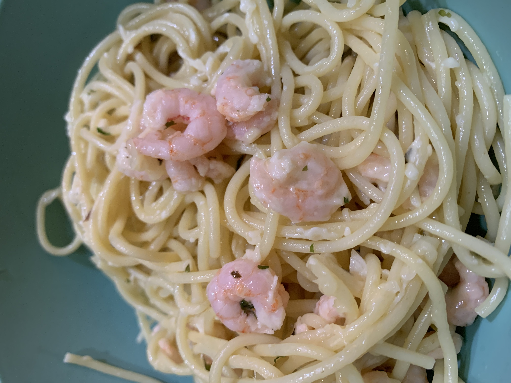

linguine with shrimp scampi
serves: 6
meg's rating: 10/10 #yum
im a whore for shrimp scampi. you can seriously never go wrong

ingredients:
- vegetable oil
- salt
- 1 1/2 lbs linguine
- 6 tbsp unsalted butter (3/4 stick)
- 5 tbsp olive oil
- 3 tbsp garlic, minced, (9 cloves)
- 2 lbs of shrimp, peeled & deveined (~32 shrimp)
- 1/2 tsp black pepper
- 3/4 cup parsley, chopped
- 1 lemon, zest
- 1/2 cup lemon juice, fresh (~4 lemons)
- 1/2 lemon, thinly sliced in half-rounds
- 1/4 tsp red pepper flakes
directions!
- drizzle oil in a large pot of boiling salted water, add 1 tbsp salt & linguine
- cook for 7-10 mins, or according to directions on the package
- while pasta is cooking, in a large pan melt butter and olive oil over medium-low heat
- add garlic & saute for 1 min (be careful:the garlic burns easily!)
- add shrimp, 1 tbsp salt & pepper and saute until the shrimp just turned pink, (~5 mins), stirring often
- remove from heat and add parsley, lemon zest, juice & slices, and red pepper flakes. toss to combine!
- when pasta is done, drain and put back into pot
- immediately add the shrimp & sauce, toss well, and serve
enjoy!